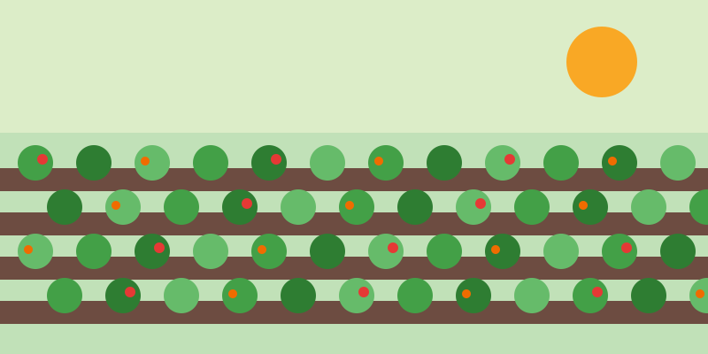

Arroser tôt le matin
L'eau s'évapore moins et les feuilles sèchent avant la nuit, ce qui limite les maladies.
Ferme-école · potager pédagogique
Douze légumes cultivés par les apprenants de la ferme-école : quand les semer, combien d'eau leur donner, combien de temps attendre avant la récolte. Cherchez, filtrez, mettez vos préférés de côté !
Découvrir les plantes
Vous aviez lu 0 % de la page.
Chargement des fiches…
Impossible de charger les fiches des plantes.
Aucune plante ne correspond à votre recherche.
L'eau s'évapore moins et les feuilles sèchent avant la nuit, ce qui limite les maladies.
Une couche de paille ou de feuilles mortes garde l'humidité et freine les mauvaises herbes.
Ne replantez pas la même famille au même endroit deux ans de suite : le sol et les plantes se fatiguent moins.